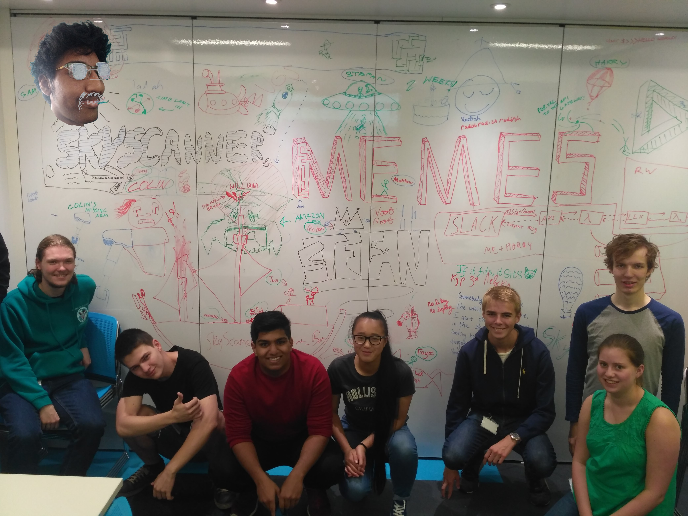
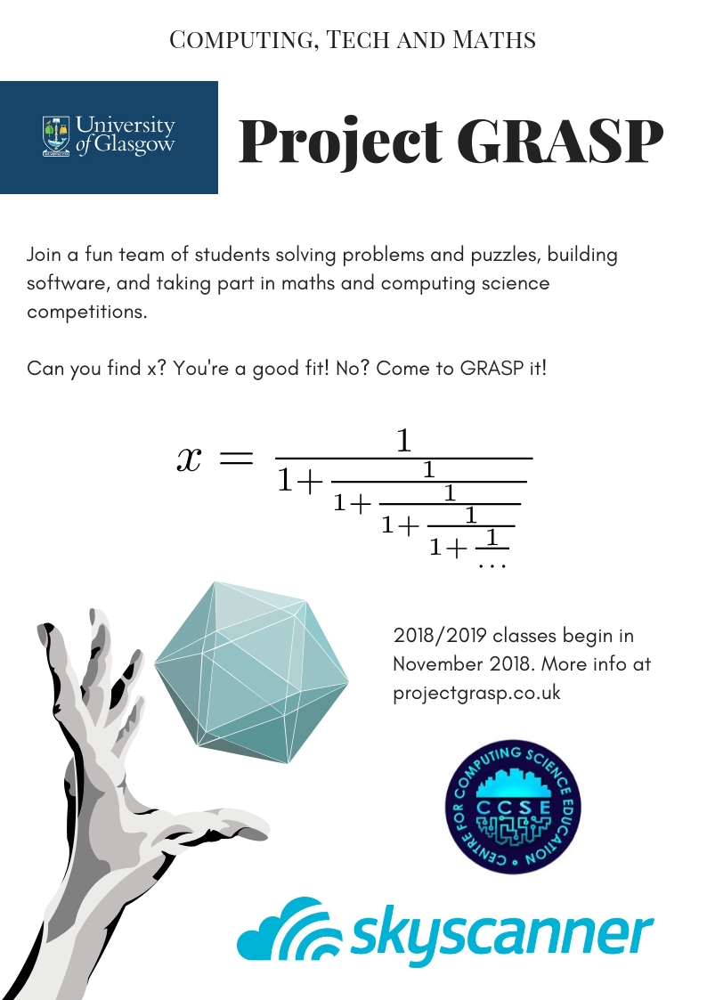

Problem-solving and competitive programming for high school students
What is Grasp?
Project Grasp is an initiative targeting students from local Glasgow high schools, organised at University of Glasgow by Adam Kurkiewicz, Jordan Baillie and Samko Gurský in partnership with Skyscanner. We solve puzzles, build things, break things, play with computers and maths and take part in various competitions. Check it out – you might actually like it!

What should I know?
You don’t need to have any prior knowledge of anything in particular! If you find maths or computers interesting, just come along and we’ll help you get better at it.
In meanwhile, here’s a problem for you to think about:

Student testimonies
It is not just problems and concepts that were taught at project Grasp. We were also taught
how to think for ourselves and as a team; how to tackle problems where we had no idea
how and how to develop ourselves on our own as well.
The focus on problems in Project GRASP is very beneficial, as it provides a method of learning which is highly effective, enjoyable, and all too often unavailable at school. Personally, I feel my mathematical ability has developed a great deal in the past year because of Project GRASP’s approach and focus on problems. Computing has been no different and the use of problems forces us to think laterally and find ways to work around tricky problems, as software engineers often have to do.
The biggest impact of Project Grasp for me was that it helped me achieve an offer from
Oxford University to study Mathematics. Not only did I mention Grasp in my personal
statement, but the questions I faced there were similar to the ones that I had to answer as
part of the admissions exam to study at the university. When I was asked to an interview in
Oxford the questions I was asked were also quite similar to the questions faced at Grasp
and the fact that I had attempting these questions many times may have impressed the
interviewers enough to get me an offer to study there.
My communication skills have definitely improved as working on the project in a group
required you to talk to other people and find out what tasks they were doing. Every morning
we would have a retrospective, where we talked about our successful tasks that we did or
issues we had with our tasks. We were very organised by making sure tasks are clear and
achievable, this would allow us to make full use of the two weeks and time was not wasted.
I have learned many skills that will transfer over well into my studies at university, such as being able exposed to a wider variety of computing systems - like python code, which I had not previously used, the AWS services, and connecting services together to create a complete entity.
Being there made me realise just how different the work environment is from school and how you can learn from each other and how important communication is.
Adam has given me the opportunity to be part of the Skyscanner Work placement and I could not be more thankful. Within the work placement I have had the chance to work on projects of which I would never have been exposed to within the school environment.
Another thing I particularly liked about this experience was that we had considerably more freedom than at school; although, that does come with the responsibility to be more productive on one’s own. This is a thing everyone must learn at some point so I am happy work placements like these exist to teach that.
How to join?
Grasp is happening every Tuesday at 16:30 – 18:30 in Sir Alwyn William’s Building, University of Glasgow. You can just come along. Questions? Drop us a line at jordanbaillie@protonmail.com, we’ll be in touch shortly!